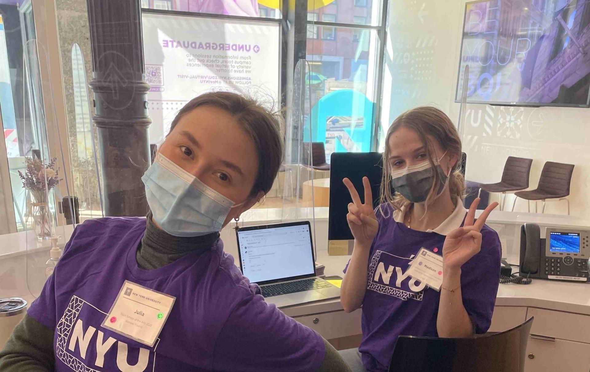

City Campus Vibes
Classrooms spill into sidewalks, cafés, and parks—learning here mixes seamlessly with the pace of Manhattan.
Discover Your Path
Join a global community of scholars, creators, and innovators. Explore flexible programs, world-class faculty, and endless opportunities in the heart of New York City.
Enrolment virtual tourAs the chill of autumn reminds us to savor the season's last outdoor lunches—like this one on Greenwich Village's historic Washington Mews—NYUers everywhere are looking for ways to spend time together. And with device-free zones and events popping up across our campuses, we're making experience a priority. New outdoor adventures, game nights, and creative workshops offer more chances than ever to gather, listen and discuss.
University Life
From late-night study sessions overlooking Washington Square Park to gallery hopping in Chelsea, NYU students plug into the energy of the city every single day.

Classrooms spill into sidewalks, cafés, and parks—learning here mixes seamlessly with the pace of Manhattan.
Studios, labs, and maker spaces stay open late so teams can ideate, prototype, and build what comes next.
Walkable access to theaters, music venues, and food from every corner of the globe keeps inspiration flowing.
NYU sits right in the center of Greenwich Village, surrounded by creative studios, tech startups, and cultural landmarks. Students step outside into a neighborhood packed with inspiration, internships, and fast access to every borough.